Benzie · Leelanau · Manistee counties
Dirt work,septic & sites,done right.
Residential or commercial, Gillison handles foundations, ponds, shoreline repair, demolition, driveways, septic systems and much more, from our yard on Cadillac Highway in Benzonia.
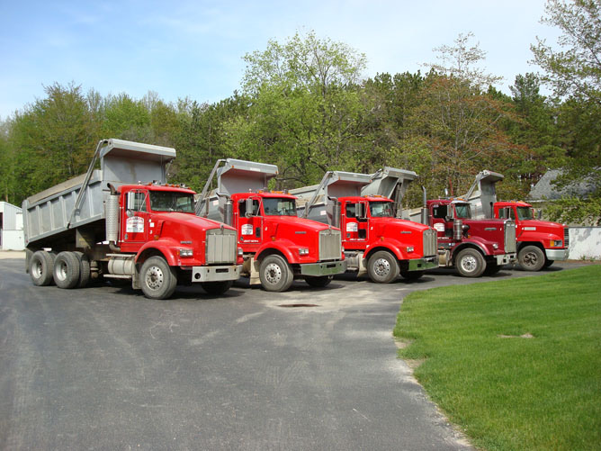
Septic systems
New septic, installed right the first time.
Building on a lot without sewer, or replacing an old system? Our crews dig, set and backfill the whole job, from the tanks to the drain field.
- Septic tanks
- Drain fields
- Pump systems
- Infiltrator systems
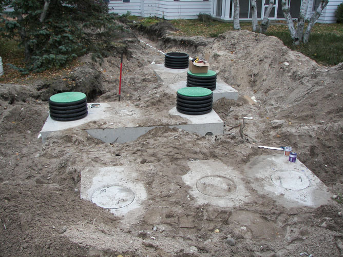
Tanks and risers set, before backfill

The same job, graded and finished
What we do
From the first dig to final grade.
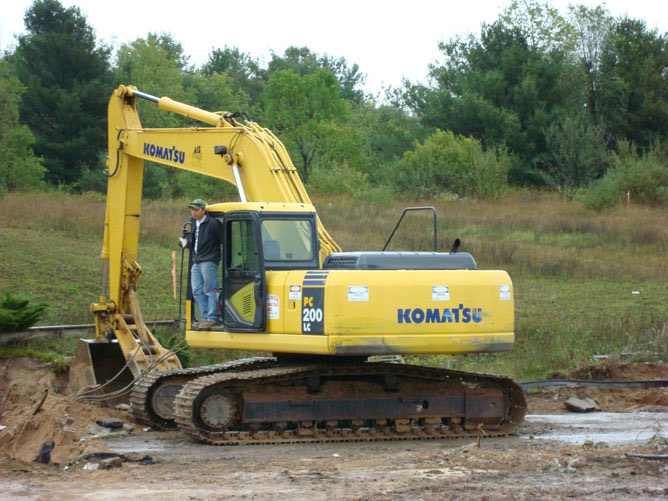
Site development
Prepping new building sites for homes and other buildings, inland and lakeshore, commercial and residential.
Learn more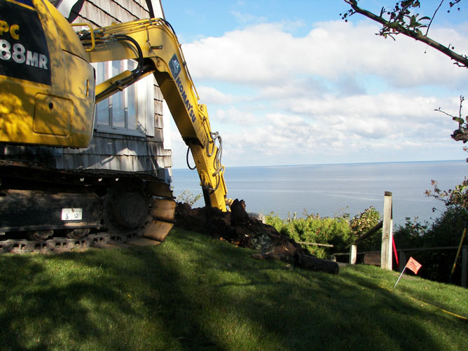
Shoreline repair
With DEQ approval, we bolster and protect eroding shorelines with filter fabric under stone.
Learn more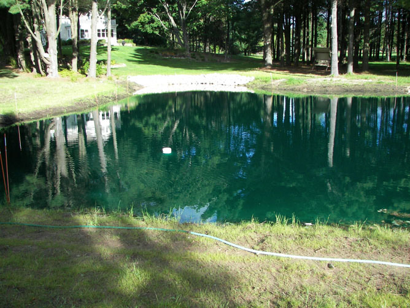
Ponds
New ponds dug, pond liners installed, and existing ponds improved or cleaned out.
Learn more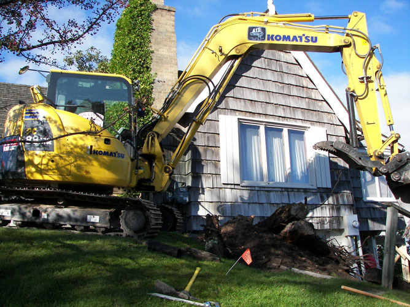
Foundations & retaining walls
Digging and backfilling foundations; retaining walls from stacked wall systems to wooden walls.
Learn more
Driveways & demolition
New drives built and compacted, and old structures taken down and cleared away.
Learn moreWildlife food plots
Clearing and clean-up, plowing, disking, dragging, soil testing and fertilizing, through to final planting.
Learn more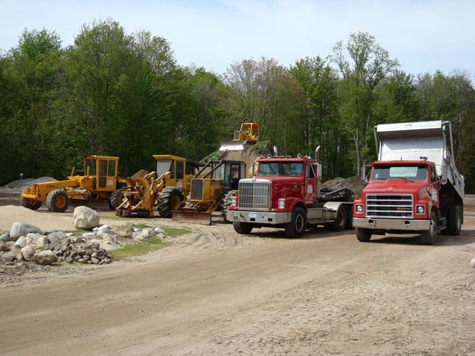
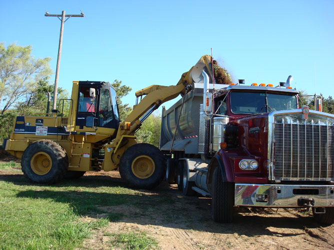
Our story
A Benzonia company, two families deep.
In 1990, Jim & Elie Gillison bought a small family-run excavating company in Benzonia called Mallison Excavating. Jim & Myrna Mallison had run it for 30 years and were known for honest, professional work. Jim Mallison stayed on for three more years to teach the new owners the system he had built.
New equipment and more employees followed. What began as a small business in Benzie County grew into a three-county operation, as contractors in Leelanau and Manistee counties came to rely on our on-time, on-budget approach.
Our work
Lakeshore, woods & everything between.
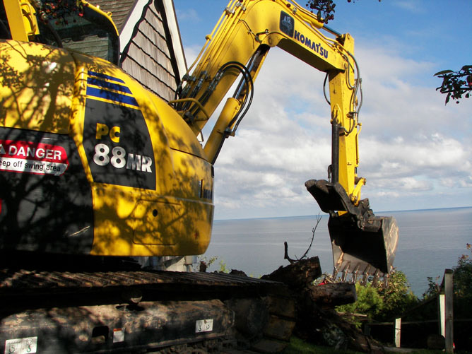
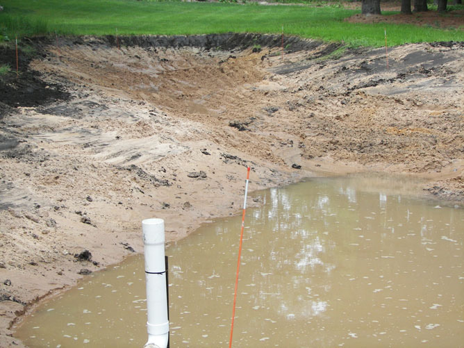
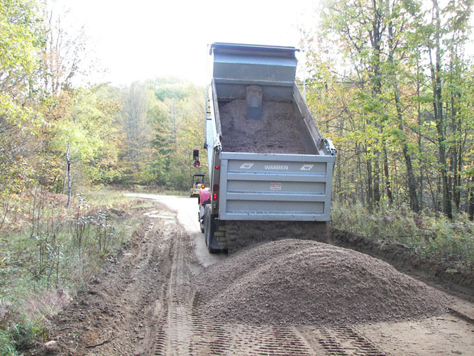


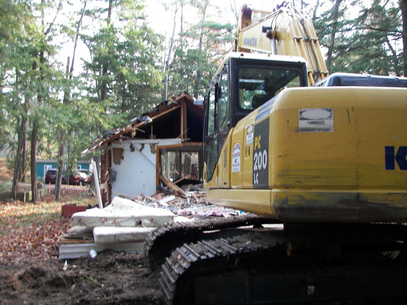
Questions
Good to know.
Not sure what your property needs? Call 231-882-4677 and talk it through with us.
Which areas do you work in?
Gillison Excavating is based on Cadillac Highway in Benzonia and works across three counties: Benzie, Leelanau and Manistee.
What kind of septic work do you do?
We install septic tanks, drain fields, pump systems and Infiltrator systems.
Can you repair an eroding shoreline?
Yes. With DEQ approval, we bolster and protect eroding shorelines using filter fabric underneath various sizes of stone.
Do you take residential or commercial jobs?
Both. Whether the job is residential or commercial, small or large, Gillison Excavating can get it done, on time and on budget.
How do I get an estimate?
Call 231-882-4677, email Ben Gillison at bgillison@gillisonexcavating.com, or send the estimate form on this page. It opens your email app with the details filled in.
Contact
Let’s look at your job.
Residential or commercial, small or large. Call, email Ben or Bill directly, or send the form.
- 231-882-4677Main office
- bgillison@gillisonexcavating.comBen Gillison
- whuddleston@gillisonexcavating.comBill Huddleston
- 7704 Cadillac Highway, Benzonia, MI 49616Get directions in Google Maps